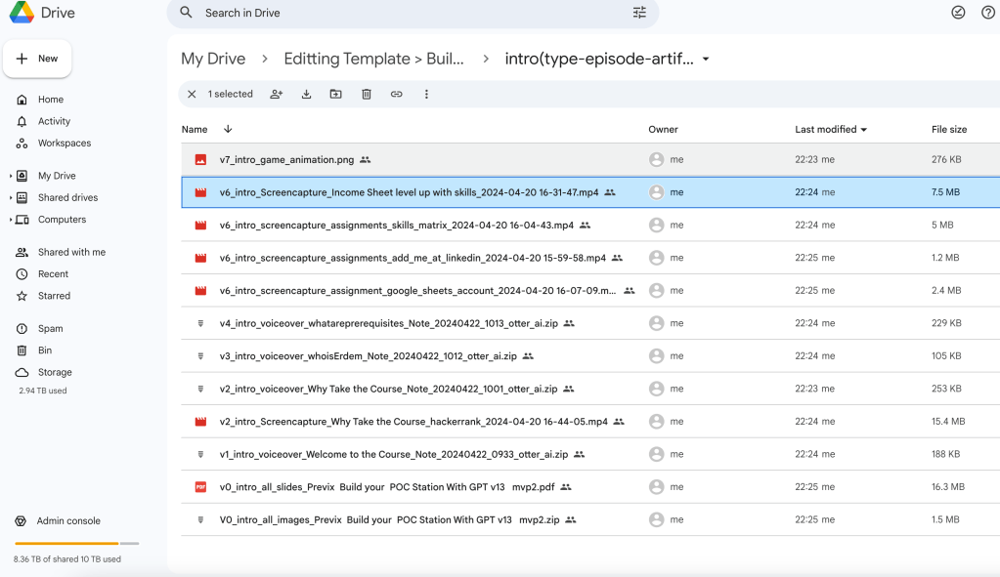
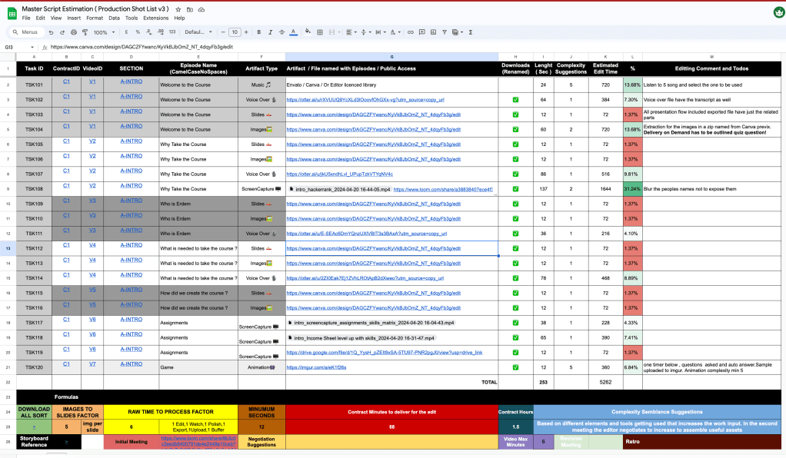
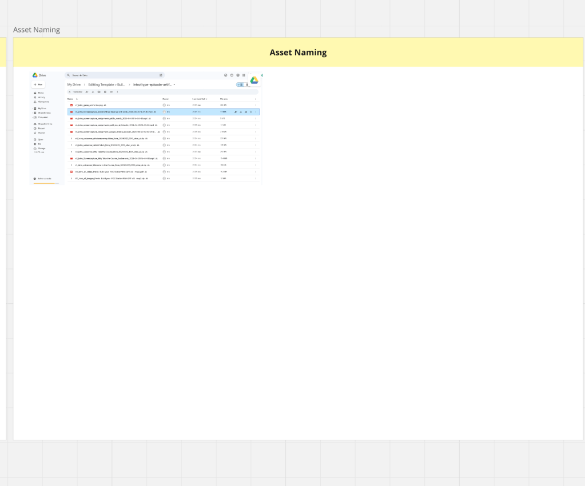

Video Editting Workflow For the Editor
Calculate Sample
301.5(edit) + 10.1.5(obs) + 10x2(meeting) = 80 dollars*
302(edit) + 10x2(obs) + 10x2(meeting) = 100 dollars*
302(edit) + 10x2(obs) + 10x3(meeting) = 110 dollars*
All Footages
https://drive.google.com/drive/folders/1ajUdvrU6rjTYhbMMOz0eMbvB2X5kJM11
Storyboard
https://miro.com/app/board/uXjVKR5-Ces=/?moveToWidget=3458764586426140335&cot=14
https://miro.com/app/board/uXjVKR5-Ces=
todo
-
v1/v2/v3 >>> names in otter!artifacts done >✅
-
add taskid✅
-
add percentage✅
-
time for the video✅

Meeting
`0:00:07 I mean, I'm not going to be like, either busy, be shocked whether it's a very exact, that I'm wearing these, I'm going to be like, a very valuable time to make a show and go the show, and I'm going to be a very, very, very thing that I'm doing here, is really weird.
0:01:24 But you just need to go to the other place. The body didn't really want to do that. You're gonna need to treat the life.
0:01:30 Why do you don't need to treat the life? I saw something wrong. The other way to waste the life besides just all the happiness you've had.
0:01:38 I don't think it's wrong. Not everything you do is to treat your chiseled teeth around. You can't even try to treat these more drugs.
0:01:45 I'm not really worried about that. You're gonna have to do this. If there's something you need to do, you be proven.
0:01:50 You're gonna have care of You can't take care of that. I'm sorry. If you think more, if you think too much, Hey Google Stop.
0:06:08 How are you? How are you, Andrew? How are you, Andrew? How man? Me, and busy. Hey Google Stop. Huh, sorry?
0:06:21 Not to you, though, the automation device. This is ringing in the background. Oh, what happened with your studio? You're shooting there?
0:06:32 still I I didn't sell it if I'm keeping it so I'm trying to I couldn't record that much other than the course that I'm right now creating I did people with business plan and by the way, address this is also a beautiful You may want to go.
0:06:52 You may want to. Second. Can you hear me? Yeah, yeah. Now you can hear me. Okay. This is also available though.
0:07:04 I was unable to explain the payment structure though, but I will try to explain the track now. I guess I did send you two mini messages and confused you a bit and I did pivot a little bit.
0:07:17 So what I did from the last time to this time is my wife had some issues I went to Oman and pivoted the business model a little bit so I understood that I need to I will create not 50 courses but 25 courses to 14 courses based on DevOps maturity metrics.
0:07:38 I shared the only one section of those 40, meaning if we have one section and there's 15 sections in month course I will use those as business lead magnets to be able to correct the lead.
0:07:54 So what did I share you? I don't want to waste your time and I made sure that this is believable.
0:08:00 So I also don't waste your time during these calls. I'm sharing my screen to you, so it should be clear to your on your end, on here.
0:08:10 And everything that I do, I will write it to here, so in a reference that you need, I will put this on here, so this should be very straightforward.
0:08:21 First of all, I created a storyboard for each pre-visualized environment. there's a storyboard and I have a previous environment where I visualized what I'm doing on here though.
0:08:36 So this is the Previsualization Environment of all of the course. I completed all of this course on WordPress and I transferred it into here though.
0:08:49 So what we are doing is tell I completed one hands-on experience of creating a sandbath station in cloud and I did show everything on here.
0:09:00 So this is the previous on the comma. I recorded the do sections for the production and in the apply, we are going to edit it with you together on here.
0:09:11 So I moved all of it to the storyboard on here, but I understand that in this storyboard, there is all these links of voltages as well as audio on here, which are recorded on and this is the transcript from the otter otter is a recording platform.
0:09:30 On the right up there is the V1 this means there's going to be a one video on here. All of these sandbags is related to this sheet because I wanted to make sure I give you a shot list that is proper.
0:09:46 I downloaded everything on from there to here so you be able to download everything in Mongo and it is the section name where is the screen capture than the episode name and I placed the episode names on two here so you should be able to find them but having said that I also placed the links in mirror
0:10:10 on here you can click and go to the go back to the So you have for video one, for files, I suppose, so one is being there, one is voiceover and the lights are in which it's okay, I will make it a little bit bigger.
0:10:28 I talked about if I were you, what I will need to be able to deliver this, not all of them has music, but at the intro you need music, but the other because this is a course you don't need the music all the time.
0:10:41 The voice over is the author. The slide is the combo because you need to be able to see the flow of the course, right?
0:10:49 So you hit the slides, but I also gave you the images. So once you go there, you don't have to get the images one by one.
0:10:57 They're all in here and you can see them on here. You can see them, right? Okay, so do you have more instructions on what specific Bommet's real one and a specific image or something like that or it's more about common sense to make everything works?
0:11:16 Very good question though. This is common sense though because even though I created this previous, this is just the previewization of the course.
0:11:26 You can change the location of the image change this image to another image. I'm only visualizing it for you. What I'm talking about, you can use.
0:11:36 Tinks that are completely outside of here, though. As long as you have the invoice for Mbata, Kanba, I'm using the Kanba.
0:11:44 We have the Mbata for two more months. It is okay for you to use anything. You can also use these as well if you want.
0:11:51 It doesn't. Okay. Matter. I want. Do you have any recordings or videos from yourself. Yes. These are called screen captures.
0:12:00 I captured all the screen captures on here and I put them onto screen capture on here. This one is this one is a screen capture who is at them has a voice over.
0:12:14 Sometimes it only has voice over. Sometimes it has voice over plus the screen captures. So I put them there as well.
0:12:22 And I also included one animation. I will show you the mathematics of how I did these slides under us. So it should be fair to you.
0:12:33 First of all, let's go through how much are we paying on here and what is the thought process. This is the classical work of a video.
0:12:42 You normalize, you do the sound, you do the cuts. I don't want to go through this video, but this is the basic editing work that I'm expecting that, but think fancy though, we understand this is not we are not doing star wars this is a course building but we need to have correct in and out points.
0:13:00 The editor payment you said your $30 per hour, that is the X. It could be $100 in the future or if I use somebody who is not a professional he might charge $10.
0:13:13 For this meeting we are paying $10. That is optional. You might want to have a meeting. I might want to have a meeting.
0:13:20 It is optional. The meetings are optional. I'm recording the meetings on OBS on here. You can also record your own stuff on here.
0:13:31 Recording of your work. You might want to record it. Or you might not want to record it. I like to watch it update my processes.
0:13:39 That is up to you. it's also $10 as a, you might want to do it or you might not want to do it, it's also $10 as well, I'm not forcing anybody to do that.
0:13:51 How we are calculating the work is, I put all the seconds on here, the minimum seconds is 12 seconds, I don't use anything more than 12 seconds, if it is even five seconds, I put the 12 seconds and there's a logic behind it and I put everything on to the download folder on here other than this because
0:14:12 I didn't find music. I expect you to find music here from Mbato-Kamba, but not I did this. It should be around 12 seconds.
0:14:21 I don't want it to be 12 seconds. It's going to be 24 seconds. Put it on here. I put complexity metric on here.
0:14:30 I said listen five songs and select one to be used. You are going to say, no, I just want to listen three songs, then put the metric on two here.
0:14:39 So this calculation changes by the estimated edit timeline as you see on here. But 24 times three is 72 right.
0:14:48 It is not 400 and 12. So where does this number come from? There's a roll time to process factor. I put this on six on here.
0:14:59 Once you put the music over there, you have to watch it once in the edit. Once to watch it in beginning, then you have to polish this, change it in and out, then you have to export it, and you need to make sure you export the music, then you have to upload it, then there need to be some buffer time,
0:15:18 meaning you might make some mistakes and correct it. So, the fact is 6, so this is 6 times that number, you understand, I'm using that 6, 3 and 24.
0:15:29 So it is not 72 seconds. For you to do this, I expect you to do this in 432, if I take five songs on here, 720 seconds for you that is the estimated timeline.
0:15:45 I put the number 62 because I looked at the voice over on here and you can see that this is or 62 seconds on here, this is 64 seconds, yeah, I said 64 seconds and if the complex is only one, meaning there is nothing that is interesting about there, the complex is one.
0:16:09 But if you go through five different items, it is five. I put this into two intro here, extraction of the images from the comma pre-zix, delivery on demand, outlined as a quiz question.
0:16:21 I want you to do something interesting on here, only one extra component, so I moved it to one to two, so it is multiplying the number by two.
0:16:33 Do you understand the complexity? Yeah, yeah, so it's something. It will multiply something. Let me show something. So, because I, let's say, barely know you, how do you work on your mind, how it works?
0:16:50 It's okay that you create all of this, but that is not the way that everybody works, you know? Yes, I'm functions.
0:16:59 So it's okay that you have all those estimations about time and complexity, and I get it. But my mind doesn't work with that, you know?
0:17:09 I understand you're a whole pulling of this, but it's not going to be applicable at 100%. You know? Yes. It's not good to work exactly that way.
0:17:20 I'm going to do my best effort to match it times, but it's not going to work at that specific amount of time.
0:17:26 Yes. You know? Sometimes I don't have to be more compact and that's it. Yes. I suppose that that is just an estimation and that's it.
0:17:34 Yes, this is an estimation. Sometimes you start with one, then you change it to two. I also expect that to as well.
0:17:41 Do you understand that? You say there's a comment that comes in. What I mean, I don't try to push me, if you try to accomplish that at specific times, at least that is not my work, my way to work.
0:17:56 My form to work. So, I will do my best. Everything is very clear till that point, but it's not 100% applicable to everybody, you know?
0:18:05 So, be careful with that. Okay? What I want to do is, once we do this estimation, what I want to be able to do in here is, there is a proposal received.
0:18:16 I want to be able to send you an offer. And I will send you to offer based on this and you can say the complex is higher here.
0:18:26 So you need to think about this, think about that. That is my Hawaii estimate. It took it's around 1.5 hours on here.
0:18:35 You say it is $30, I put $30 in, then I put the, we are going to have 1-metics, 2-metics on there.
0:18:43 If there is 2-metics, I'll put $80, if it is 1-meting, I'll put $70 times 1.5 of your time. Plus, I expect you to record it to obvious if you did, if you don't do it, that is all on your side.
0:19:00 So, this is how I estimate it, the images per slide is in these slides, there are these images, there are these images, one, two, three, four, five that you can use.
0:19:13 I put the five over there as a metric on there though. The download is, if you want to be able to come here and download everything from this link, it is what that means.
0:19:25 Minimum seconds, I only take the 12 as minimum seconds. No task can be like one second task. I don't we don't have any one second test in a task has to start from the minimum The contract minutes for this C1 contract.
0:19:40 This is the C1 the contract the first contract that we do comes on to here the contract ours is The length times the complexity this this divided by 60 as you see on here is 88 minutes that's 1.5 hours on here and the complexity I explained the complexity on here.
0:20:03 How many videos we are going to have V1? To V7, we are going to have 7 videos. I will upload them to you Demi on here.
0:20:13 This is everything that I'm going to tell you. If that's okay, I will send you an offer. Is there any part that is not clear on here?
0:20:21 I expect this to be the estimation to start the project. How I estimate this number is, I did put this on here for the basic met.
0:20:33 This is the $70. We have, let's say, the we have two meetings, not only one, one at the end, these can change times 2.
0:20:48 This is $80 of work for those videos to be delivered. I've moved it to $80. Your hour is $30 times 1.5 hours.
0:21:01 Then I expect you to record it 1.5 hours to obvious and I will go ahead and watch it. This might be there, this might not be there.
0:21:09 then we do one more meeting at the end, you deliver it, then it is $80 and I correct the project for you right now on here though.
0:21:20 Is this clear or did I over complicated it for you though? Yeah, absolutely, you over complicated it. I think it's more than enough that having all the assets that you have there, let me try to do some testing with a couple of episodes, let's say.
0:21:37 And I will figure out how complexity is, how much time is going to be a sped on this. From that point of view, I can say, you okay, I can afford a $30 for this going to take more time or it's going to take less time.
0:21:51 I don't know. I don't know how, what quality are drug with respect to, because to be honest, everything that you have there, you have expanded quite a lot of time trying to do a lot of things.
0:22:03 I know you want to delegate all this process to somebody, because you have a day-of-time, but we're all those times.
0:22:10 We've three episodes, times 40. I have to delegate 600 contracts. So that's why I'm building this. Otherwise it's too much work.
0:22:22 If we come here and try to negotiate your time and the project, such as sometimes we might want to do three meetings.
0:22:32 We do three meetings. sometimes we don't want to do any meetings, but you just want to record it on OBS and send it to me, just record it and send it to me on OBS.
0:22:43 And sometimes before the start, you can come in there, are them. This is not complexity one. There is the complexity of four such as I did an animation over there for you.
0:22:55 It's a very basic animation. I will show it to you. I expect you to be a better one now than this one.
0:23:01 the animation is here, the ATN, C1, V7, do you see that? Andres. It is this one. It is not a rocket science animation though, but in this animation, this is like this kind of animation.
0:23:16 We ask a question and there's a timer at the bottom. We ask the question, ATN of the timer, we show the delivery on demand is the checkmer.
0:23:26 So, this is the animation, but I expect on that. I put the complexity to the 5th thing to the 12th.
0:23:34 Then I came up with the 6 minutes. This is around 360. It's around 6 minutes. I can put the 6 minutes as of because these are all the seconds, 6 minutes.
0:23:46 It should be, we should be able to do this. Either you can record this on Kamba or you can do this on the Vinci, but you have to understand if it doesn't take six minutes, but that animation takes six hours, then you are overshooting the quality maybe.
0:24:03 Or, but what you can say is you can come here, are them, it is not six minutes, but it's also not six hours, but the complexity is 10, and that is going to be not 12 seconds, that is going to stay there for 36 seconds, understand.
0:24:21 I moved it to here and it is 2 hours and the map changes into this. So that's why I want you to go over it.
0:24:30 So map changes into this. 2 hours 6 I will make it easier. 2 hours to 60 the map changes to this.
0:24:39 2 hours on 60 2 hours on obvious times 2. This is 60 AD, AD, this is 100 dollars. Do you see what I mean though?
0:24:53 You change one of the factor and you go over it and understand there's going to be more stuff that you think that is needed.
0:25:01 Even in my own net, then we can move those numbers up but you need to convince me that the complexity is going to be much more complex than what you think is going to be useful for the customer.
0:25:14 That's all. So find them. And I also moved the complex of that thing a little bit higher so to 36 seconds to complex the of 10 because it's an animation animation complex the 10 so I moved it to complex the 10 you can say this is taking more time than it's supposed to it is not like just putting of one
0:25:43 voice over to an image. So your time is always bounded. You understand your time in the future can become $40, $50, that is separate and complexity.
0:25:54 You understand what I mean to address. Complexity is if you have more and more items in the action, the complex number increases.
0:26:03 If I give you 100 images, the complexity has to be much higher. But if there are three images in the picture, the complex is much more.
0:26:14 Okay. I'm totally lost without better. Let's do this. Let's try to work with a couple of episodes. How it's going to be the whole difficulty of this.
0:26:29 The amount of time I'm going to calculate by myself. You can do that for me. It's something that I need to do by myself.
0:26:36 And when I have done this couple of episodes, I'm going to tell you, okay, the complexity is very, very easy.
0:26:43 I don't know, I'm going to expand too much time with just one episode. So maybe it's not about $30 per episode, let's say.
0:26:53 It's not going to be a relationship between one and one, you know, one video per one hour is going to be maybe 30 minutes per episode or something like that.
0:27:01 So I need to understand the process, whether you have there how much time it's going to take me to download everything, to compose everything, to make the animation, whatever it needs, and then I'm going to tell the OK algorithm.
0:27:13 This is going to be the final price, or I'm interested in doing this, or not, because I have other projects that may be for myself, or how do you say this.
0:27:25 Or start to find to do, you know, they're going to be more complex in my my, I don't know, whatever.
0:27:31 And then from the point of view, we tell you guys. It's small enough for you because right now, we talk here for one hour of duty, we need to you download all the footage and do the stuff, then you calculate your time, then we do another one hour meeting, then at the end to go over them, we do three
0:27:49 meetings, we think that's better. I will move it to not age dollars to 90 dollars because we are going to have another meeting to go over $110.
0:28:02 We go over with three meetings. I'm trying to remember some more questions. I'm trying to go to this link. But they are not working.
0:28:17 I also put one link to download everything in my chat as well. And I named the files as a, do you want me to show it?
0:28:27 Yeah, where is that link? I have like 40 links here, I don't know which one I want to follow. On here, on the download also, you can download them on here.
0:28:39 If you click this, you should be able to download. I will put this on here to the today's talks. Where did you click?
0:28:48 Simple. I will put all footages on here, all footages. I will put this on here. I click this part. Don't load all sort on the bottom if you're seeing me.
0:29:00 Oh, I'm here, but I also put it back on your half inch row. I suppose you seem to have? Yes, I put this link on here as well.
0:29:11 So you should be able to have this. Are you there, Andrews? Yes. Yeah, yeah, yeah. Sorry, this one got stuck on the other side.
0:29:21 I got this on here, so all the footages are here. And also need, like this on here though. So you should be able to sort, download them and be able to see them.
0:29:33 And in the comma, I also shared you the comma. You will be able to see intro by by as you see.
0:29:42 They also relate to it as well. And we are doing the first test slits. First night slits, two to 10.
0:29:49 We are doing the door slits. And I only put those into the image. I didn't give you all of it to confuse you.
0:29:56 I only give the first nine and we are going to upload this to a U.D. in base course and all these links should work.
0:30:05 I tested them and I put the downloads on gear. You can either download them from here or go to here and download all of them in one go.
0:30:15 Yeah, I got it, I got it all. Yes. So I need to open the one more camera in online time.
0:30:22 Some of them has multiple files in it, such as the images and the voiceover has the MP3 and the transcribe as well and you can also see them on here as well though, they are also on here on on the storyboard there's that.
0:30:42 Once you look at the storyboard, it stays here. I think this is a useful storyboard. Am I wrong, Andreas? Or do you think I did the stupid job creating this storyboard?
0:30:53 There is the link. Oh, this storyboard is quite good because you have all the assets, you have the music, the voices, the camera, everything is okay.
0:31:02 Maybe the transcription is, I don't know, I need it because you're not going to say what you're saying and that's it.
0:31:08 I need it. I want to make that this text follows this text and there is flow between them, but you can also come here and play these guys on here as well, Andres.
0:31:20 You don't need to open the camera. It's a combo ink. It's not a combo. This is Mirror. I will put you the Mirror link, the Storyboard link, onto this document, the Storyboard.
0:31:35 Storyboard is here for you. Is that is the most important file here so this is where it's saying okay, this is the video This is the assets and this is what we're going to compose.
0:31:47 So this is this is Most of the time, but you are looking for I guess is I guess is this sheet, right this This is what you are looking aiming at this one, but this one doesn't take that.
0:32:04 That's it. Yeah, I got it What is that mean? My own whole mirror, whatever. I put this link on to here as a mirror link on here.
0:32:14 And I will give you this link. I will share you this link in this chat. So you will be able to get it.
0:32:21 Get all the things. And I will put the Luma plot to here of this call with the transcript. So what this is is this is very good in mirror.
0:32:33 I started using it in the latest contract. I can't come here and export this, isn't it? No, no, no, no, no.
0:32:40 How do you open this mirror mirror? Because it's not doing anything. I did send you the link, but I will send you the link one more time on here.
0:32:50 This is the mirror board. I will send you this on this chat, but I also put that onto the documentation.
0:33:00 The mirror board is the editor's guide and the story board. Okay, you guys are coming? Why do you need to help for?
0:33:16 Sorry, Lord. Okay, so here is there. Do you want me to show you the mirror? The mirror, the board has all of the storyboards.
0:33:42 and I put everything that is related in the project on to share to make your life easier on here, though.
0:33:53 The other slides, I didn't talk about this because I'm totally lost here, so you have that at the page, okay, I'm there in the mirror, okay.
0:34:01 So the first one, the intro, whatever the phase with this guy, okay, there's a show your screen, where is the file?
0:34:09 Show your screen, I will help you to find it in the mirror. On the mirror for you to be able to find this on the left hand side.
0:34:27 There is a box on the left hand side on the button. There is this rectangle on the left button. Left button button, left button left left left left left left left take down, down, left.
0:34:43 It's there's a rectangle. There's a black rectangle on the left. You need to go with your mouse. Don't move the comma.
0:34:52 Go on the left hand side with your mouse. To the browsers left. Left don't go inside the comma. Move your mouse.
0:35:00 Do you have it? Move your mouse. Yes. Perfect. In here you can see all the frames. So wait one second.
0:35:09 This is an infinite canvas. I'm putting everything on to here. And I can't refer any object on here. And you can download the stuff on here.
0:35:19 If you scroll the such as click on that one on the 12, 12, 12, 12, yes, that one. Target audience.
0:35:28 Somebody ask me what is our target audience. I put our target audience on here. This is an enterprise video that I'm going to create.
0:35:37 This mirror is an infinite commasment. I can create these frames, including the story here. Let's come back here. Okay, I got this.
0:35:47 This is the first one. This is the first. Go to left hand side. The first one is the on the left.
0:35:53 Okay, so this is the first video, right? This is the first video. It is with the video. There is the text.
0:35:59 Give us a computer. So here is a let's say main image, right? Yes. Where do I found this image? Where can I download this image?
0:36:08 On the left-hand side, I put a link over there. This one. For you. Yes. You can click on that's one.
0:36:16 There is a link. It should be able to open up a link for you. Not that way, though. There should be usual TV link, maybe the link is broken for some reason.
0:36:33 Let me just check. But it is in the camera though, all of those links are inside the camera. Once you double-click on it, it goes to combat, I double-click on it, and it goes to combat, double-click on it.
0:36:53 Double-click? It doesn't go on the other side. You might say, it does go. It is there all in the combat.
0:37:00 And I also put them into the food. All in the combat. Where is the combat? I, the previous overdere, but I will send you the comma.
0:37:13 But normally it works over the order and I also put the comma link on to here. You can hit a control F on Mira and search the comma.
0:37:23 Control F on Mira. Right comma. Yes. These are the comma tools. You should be able to go to anything related to comma over the it was under it right now it came under it over there and you should be able to also download by the images as well.
0:37:46 The images has a download button now again let's come back here let's come back here so I need this link where I do find this link that is coming from the combat now it's not open okay it does with a little icon okay so I have And it comes as, so I have this image, I need to download this image.
0:38:12 I don't know what will happen now. I don't know the depth. I'm put them for your all images. That's in the Google Drive.
0:38:19 I already gave them to you. It is all images. It's in a zip format, zip format. I need to know.
0:38:29 Which one of these? Welcome to the course, no? No. It says zip. I will tell you the name. The name is all images-perfect, prefects, all images-perfects.
0:38:48 You didn't hear, yes. I also don't create, gave you the PDF version as well, so you have the both PDFs, but this is not very useful for your address.
0:39:01 Why? Because you want to maybe get the individual images from Cumber. This is just to give you an idea or you can use it if you want.
0:39:10 If you don't want to use it, don't use it. You understand? You are free. No use it or not. Okay, I got this image.
0:39:19 Let's come back here. So I got the image. That's the first point, right? Yes. So I got the image. So now I need a voice over.
0:39:28 So the voiceover is supposed to be here? Yes. No. The otter link. On the right hand side. There's an otter link.
0:39:38 Please use the otter link. Yes. The otter AI. That link. That's very good. Yes. On here. You need to add an otter account to download this.
0:39:53 But I also downloaded this for you. author can automatically read it for you, click on the speaker, hey there, click on there, click, click, it will start reading it to you.
0:40:10 You can hear it, stop it, create an account in author, it will let you export as well. But you said you already have this downloaded, or have it downloaded, I already did it as well, but create yourself an author account, It is free, it will also let you download here.
0:40:29 I give you two options. First of all, I give you the option to download everything once because I don't want you to waste your time, but I also give you the links because the author lets you read it, transcribe automatically.
0:40:43 So you have an easier job to see what's up from the storyboard. On the author, on the right tap inside, just say next next.
0:40:56 This is an AI tool to record your transcripts, remind me later. Yes, if you click that link one more time, please click that link one more time, the author link, yes, perfect.
0:41:23 And now on the right tab, there is the export function, if you go to transcript. Yes, here you can download the text, you can download SRT, but I don't know which ones you need.
0:41:36 I put the mp3 and the text file for you, and this is already there for you. Okay, so I have this audio here.
0:41:58 Yes. I am going to extend. Okay, I got this. So it's now working. I'm going to, Okay, so that's the whole audio.
0:42:30 Okay, what else do you need from this? The classical in and out points normalize them. You need to export this.
0:42:37 Yeah, everything about color or audio. That's point to be on my side. That's not a problem. So again, what else do you want to do with this?
0:42:46 So if you open the Excel sheet, if you open the Excel sheet, let's look at the V1. the Jews, all the artifacts.
0:42:55 Let's look at that one. I think we did. We won, but yes, yes, this one. I respect you to some music.
0:43:08 I love it. I'm gonna select the music. The voiceover is done. The slides, the slides are done. It's done because the images are the same thing.
0:43:18 But you might want to say, how long have you been used for your server for a server for server as well?
0:43:23 Or, for instance, you're going to code export for a server related, my instruction for the images in a simple, call, cover, perfect, the memory on the map has to be aligned with this.
0:43:34 So, what? It's trying to put the image in a simple way to deliver on demand has to be aligned with the question.
0:43:41 What does it mean? Yes. If you open that slide, the first slide, there is the delivery on demand. in the beginning.
0:43:49 I need to make sure that image, you can open it from there. I put the links everywhere as you see.
0:43:55 So it should be go to the first slide. This is the one is the zero is the sections. If you go to the first slide, hit the right arrow.
0:44:01 It will just go, hit the right arrow. Right arrow. Right arrow. Okay, now we shall. Right click the gray area first on comma.
0:44:14 Okay, for the next slide. Yes, on here. If you look at the right button, your image is too big for me though.
0:44:21 Right button, it says delivery on demand. We need to have something on here to outline that delivery on demand with an error.
0:44:30 Okay. Okay. Because I'll give you an address. I don't want to all complicate this though, but in the animation, we are asking this as a So at the start there's some music you outline that thing.
0:44:42 So the weaver should be able to remember that's what that's why I did some Gamification and put the music here.
0:44:48 That is the logic, but that is all video one As you see selecting the music. Yes, selecting the music is twice the time Of you putting it there and inputting it.
0:45:02 Do you understand that's the complex thing? Yes I can't. Don't worry about the music. I'm going to compose the music or download the music, whatever.
0:45:10 Now, what I'm, I have the video or the slide, and I have the audio part. That's perfect. So that is, let's say I normalize, I colorize, I do everything on my side.
0:45:22 There is a certain cost of, that is only my, from my side. Okay. So that is, let's say this is all, everything else that is done.
0:45:29 Yes, video one is done. Anything else from this? No, you exported, upload it, video one is done. We are not expecting broken signs.
0:45:37 Let's say, let's say, this has been a one. I'm not going to create a new timer or a new program for this.
0:45:43 What I'm going to do is, okay, I'm going to create a new video here. Again, the process is going to be repeated from this point, right?
0:45:53 So I need to go for this. This is a line number two. The only thing is there's a transcribe section.
0:46:00 People should be able to read the transcript. They're the subtitles. You want subtitles for all of it. I put them on to the statement of her.
0:46:11 There are subtitles for everything. So I can use them in LinkedIn and people should be able to watch them without turning on the audio.
0:46:20 I'm going to second. What is the name of this one? These are classified by numbers or something? You can sort them by name.
0:46:35 So I put them on the sort by name. I suppose this is the second one. Yes, right. You can see them on the storyboard.
0:46:44 No, the why is the second part. but they're all separate videos. I put the V1, V2 on top. Maybe I should have put the V1, V2 on here as well, but I didn't.
0:46:57 Next time, I will become better on this process, so on. Yeah, get some numbers. It's like number one, two, three, four, five.
0:47:04 But I put them on here, though, but I didn't put them into the file names. In the next run, I will put them into the file names.
0:47:11 I only put, okay, that's not a problem. Also, okay, I get this. Now I go and quit the voice. So, where is the voice?
0:47:19 We're doing images. Ah, the voice over I need to download from here. I also put them into the Google Drive.
0:47:26 Everything is in the Google Drive. You don't need to. You can just look at the files on your Google Drive.
0:47:33 Everything is on the, like you download everything with one click. Not hundreds of clicks. It should be here. It is the voice over scroll down.
0:47:44 And the here, welcome, what, who am I, why section is what you are looking for? Not, it's not the right path.
0:47:53 The voice, why take the call. Do you think this is a good naming structure for you? Is it easy for you?
0:47:59 I think it shall be better that have only just numbers on that set. So, for the number one, for the line number two, for the number three.
0:48:09 Okay, I will be better. Because if you can take a look here, Yes, every one of the files has note a note if I go to the next file.
0:48:18 I can change those. I can change those because those are coming from Okay, I can't really name those. That is not a problem, but try to give like like in a specific names for this because it's quite an to try to read a whole thing and it's more, you know, better organization with the numbers of this
0:48:40 light on this. I will call it, if you go back, I will call it like this, if you can go back to the file, file explorer, I will call it like this in the future.
0:48:49 I will call it intro voiceover V1 intro voiceover. No, yes, or maybe you can create, well, I don't want you to create more and more stuff.
0:49:00 Just yeah, maybe something that it says be one and that's it. Yeah, sure in the future. I will do that.
0:49:06 I learned it. I took a note from this session So I will do that in the future. All right, what else do you have?
0:49:13 I have air. Let's say I download this audio from here I got it extended to the point that I need Again, I'm going to create a transcription or sorry put the transcription here to like a subtitles And then I have number two And then I create the same thing for number three and number four and so on.
0:49:32 Yes. So you have seven, you can have one timeline and do this yourself and separate. I don't care about to davinci resolve fire.
0:49:41 I don't care about. I don't care. You involved in the davinci process, but give it to you in a correct way, but that doesn't mean that only use the combat that I have given to you.
0:49:51 You can use other images if it makes more sense. understand while you listen you what you say I want to use the stock footage I want to use something else I want to use as long as you have an invoice for it such as we have the invoice for the emmato you can use the audio music from there images from
0:50:12 there to me. Of course there's any kind of risk that I consider that it makes sense to this but for the whole position of the image, sorry, they're not seeing only pay.
0:50:24 Yes. So, for the whole composition of this, I think this is done. I'm not going to replace anything of this.
0:50:30 If you look at the Excel, there is one more thing in the Excel, not only the image, there is also one more screen capture on there for the Y sections, screen capture.
0:50:40 Heck a rank, I show them the heck a rank. And I'm telling you in the comments, You need to blur out to people's names such as we can't give Aditi Shadrata Tom Vison you need to blur these out I wrote it there and I increased the complexity of that one if you look at the exact sheet Oh, this is more complex
0:51:00 . It is one thirty seven and the complex is Well first I can work first I can solve this is being a one with this gray color this is a bit too, to be straight, et cetera, the B7, it's another color, I don't know that it has another color, so the only thing that you need is blurred faces one time or below
0:51:19 , question says can also answer sample of blurred image, okay, this is the in animation that you want to do it for this, okay, that's not a problem and that's it.
0:51:28 Yes, that is it, but I'm going to get seven videos from you and if you want to include more stuff, we can have another meeting For your can you make the complex the section can you make this screen smaller so I can see the complex the column Make this smaller.
0:51:50 I make this image smaller. Yes, I can see the complexity such as on the line 10. It says on the slides on the complex the one you can increase that to 2, 3, 4 if you are going to use more and more food to just from Invato, do you understand that the compound you can increase the components there instead
0:52:12 of me paying you two hours, I will pay you three hours. Do you understand? Yeah, but they have to make sense though.
0:52:21 So even though I approved a hundred and ten dollars, at the end I will pay you a hundred and forty dollars, but you are going to say these images made more sense and the people understand this much better.
0:52:33 Okay, Karim. So let's do this. I'm going to offer you this first section of videos to understand how this is going to work.
0:52:42 Okay? I'm going to send it to you. I'm going to calculate my own stuff. Okay? I appreciate all of this and maybe this will be all of this makes sense to you.
0:52:52 And that's okay. But for me, it doesn't make too much sense because if you don't know how I work. you know, maybe I need to take more resources or maybe something like that blur people faces is going to be more than just the number two that you have.
0:53:08 It's on my own, you you can't calculate that from me, okay? It's that is okay for you, but not for me.
0:53:15 So let me try to work with this like in a first trial. Okay, and then from that point of view, we can start with the other ones, okay?
0:53:25 At this point, it was easier in these cases. We did just for a second, trying to go step by step for the first two videos, trying to understand the whole process, the whole work will.
0:53:36 And from that point of view, we can start with the full. So, the next one, because all these instructions that you send me here, you know, mean, it's a lot of resources, links, whatever.
0:53:48 You have spent quite a lot of time trying to get all this. And it's better to have just a short call to try to understand, but in the next call, you are going to go through your estimation and we will correct the project offered for you in the next call in, I don't know how in this, you are going to
0:54:07 do it, but in the next call, you are going to say, okay, Ardan, this is going to take me, if it doesn't work out, I owe you $20, because we did not want to think we don't worry about it.
0:54:19 I'm trying to automate this process because we are going to do though, I need to make sure it is very clear and it is useful for you.
0:54:30 I want to make sure it is useful for you, and if there is some column that you don't need, just tell me, I want to make this process easy for me to estimate and easy for you to deliver though.
0:54:44 But I don't think this storyboard is bad and the images are bad, I guess, but we can make I will I got three notes from this session.
0:54:55 The three things that I will do is, I will add the V1 V2 V3 to the names of the otter.
0:55:02 So it is a bit easier for the artifacts, artifacts. I will add task IDs while talking on here and I will also put a percentage calculation.
0:55:13 So you will be able to visually see these here though. What do you think about the recording quality and audio.
0:55:20 I did this with the headphones that you suggested to me though, because when my headphones, it is still recording. Okay, well, to audio.
0:55:31 And this is for an enterprise training, though. This is not going on. Oh, you look, it looks quite good. The only thing that I want to say, but it's not allowing me here is to see the whole video.
0:55:43 But it's okay. I think I got it. Let's, let's try, let's the first test for the first videos and from that point we can start working with the following and try to fix the things that are not working or maybe can be improved on the whole process and that's it.
0:56:05 All right and this video, this MVP what this is doing is if you open the So, this is A1, okay, in a second.
0:56:22 What is A1? A1 is the section. This is the section. Where is it? No, there's another one. This is A1.
0:56:33 A1. And there is the A2 because I export them into PDF. These images later. I'm working right now. 10 minutes, go, 5 minutes, go.
0:56:44 Okay, this A1A2, A means it is the first intro because I will have if you look on the left-hand side, there is ABCDEFG2K that I create all these different storyboards.
0:57:00 Right now they look, if you click one of them, they are all the same, but I will use, if you are okay with this template, I will use this template for the remaining ones.
0:57:10 Yeah, I think what I need is, for example, this is going to be 1, 2, 3, 4, 5, 6, 6 elements, right?
0:57:18 6 is like your 6 videos. Yes. I actually understand this one as a single deal, right? Because 1, 2, 3, 4, and so on.
0:57:27 Okay. So, once are for the follow in chapters or something like that. So that is the video 5. The video 6 is the assignment.
0:57:36 Video 7 is the animation. The video 7 is the animation. If you go to write. Yeah, yeah, yeah, yeah. So I think the storyboard, I did the storyboard correctly this time though.
0:57:51 It makes more sense. As a previs this makes more sense. As a storyboard, you can see the flow in the storyboard.
0:57:57 This is just visualization. And you can download the Elementor Camba as well as on here. And you can use, okay, here do you have a intro?
0:58:08 Yes, okay. We will have BCD later, for that one. So A2 for this moment is, is on the use on here, on the Camba, for me to be able to sort them out, A123 for if there is multiple ones.
0:58:26 that this corresponds to this one, right? Yes, I go this one to put the A1, A2 here, though I do not put it there, I will take another one.
0:58:35 No, what is on track ID? Yes, on track ID. I remember from your site. Yes, is the first contact that we do, video ID is the first video that we get, but you need to make sure that you name the videos as welcome to the course, the camel case no spaces.
0:58:51 What is name? with these episode names so I can upload them to you the me with ease so I know what if you name it properly it will be easier for me to upload them to you the me so I don't have to hassle on here I will only add the task ID on here right now once we are talking we need to know which task
0:59:11 we are talking on but I don't want to over complicate this sheet but I'm going to create a 15 more of them on here to be able to delegate all this task to you.
0:59:23 I will, once this is good, this is working. I will try to iterate this a little bit to make it a little bit easier for you to next time.
0:59:31 But I think this is usable. I see this not over rocket science, but can we say, when I finish this sheet with all the links that you can download from Google Drive, then I finish the production shutlist.
0:59:45 Can we say that or the production is still not finished? So again, I don't want to finish this sheet and give it to you, that is everything that you need with the storyboard, the production is ready.
1:00:06 I don't need to talk to you, this is not ready and the storyboard is not ready. It is too much back and forth, I guess.
1:00:16 Yeah, again, if you have all the assets in this spreadsheet right and all the assets are in place with the links, this all these links work.
1:00:29 It should be not problem, you know, I have the music or I need to get the the music from bottom that's okay.
1:00:37 I have the voiceover, it's okay, the lights are okay, the images are okay. And you have the specific instructions here.
1:00:44 So, perfect, I got it this. So I'm going to override all of these other, I'll have to say columns, I don't need those.
1:00:54 I don't need this, contrary, whatever. And everything, it's quite clear at this point. You need the complex the dog, because if you are going to use other stockfootages and you want to use them, I want to be able to pay extra for them to you.
1:01:09 You can increase the complexity and tell me are there a degree. What is my dollar? Let me try to replace this.
1:01:16 We'll try to explain it from my end. Let's say I'm going to start right now. It's 1125 here in my country.
1:01:26 I'm going to start working on this. I'm going to start my clock. Let's say I'm going to take three hours with this.
1:01:36 Got it. I'm going to say, this is 3 hours for this. You need to pay me 3 hours by $30 and that's it.
1:01:45 That's just an example. So in this case, I'm not going to be precise on this amount. Maybe you can calculate this by yourself.
1:01:54 Or maybe you want to create, I don't know, something that you're going to say. Okay, how much time did you spend on each one of these videos on each one?
1:02:03 So I'm going to say, Okay, I spent three hours on the whole thing, but maybe with this, I just spent 15, 15, 15 and so on.
1:02:10 You know? And then maybe you want to create some kind of calculation that I don't want to say you, okay, this whole thing just was three hours.
1:02:20 And that's it. I don't want you to do that. What you are saying is correct. That's the reason I want to watch your OBS and make this mathematics easier.
1:02:30 Oh, but I don't do that. So don't expect me to record this on OBS because the resources that I'm going to spend is going to be a little more.
1:02:41 I don't want to spend more time trying to record and send it to you. If you need it, like an explainer, we have done whatever of it or something.
1:02:51 No, but instead of OBS, we can have another meeting. Yeah, maybe that makes more sense because, you know, in case this I'm going to create something Maybe I need to start a project so no, but if that is on your end, if you don't want to have a meeting to do Yes, or I'm easy, but if you want to have a
1:03:11 meeting, let's have a meeting, I'm okay Yeah, I prefer to do a meeting like this, I'm trying to explain and work with it and that's it Yes, let's fight a little bit in this contract about the time about the price We meeting some place then we look at the second project But we are still going to meet
1:03:30 again. You are going to calculate the time on your end one more time. And see, it is okay for you though.
1:03:37 But I think we are in a good place. Thank you very much. And yes, I hope to hear from you soon.
1:03:43 Yes, sure. Maybe I can send you this tomorrow, maybe. I need to organize myself with other things. It's okay. OK, send it to me tomorrow.
1:03:53 I think this is also fair. If you don't wish to take it, I owe you 20 pounds. you explain it to me, no, no, that's a, you stay professional.
1:04:03 I need to make sure that I want while you are telling me, or this is too low to high, I'm trying to understand it as a feedback and make this process better because I will try to do this.
1:04:15 And the only thing that I didn't share you on here is I pivoted from releasing them to YouTube to releasing them to my website called If you go to DevOps Engineering, just go there then we will finish the call.
1:04:29 You can see all the other courses that I'm going to create. DevOps that engineering, not on YouTube, on DevOps Engineering.
1:04:37 I will send the link. DevOps Engineering. I did send the link or you can go there. I'm not getting there.
1:04:48 Is that between the DevOps Engineering? you can write there. Yes. So this is we are creating all the courses on the tap there is the consulting contribution and coaching links but it did not get loaded on your end.
1:05:08 Can you hit control F5? The menu did not get loaded. Maybe the so we have the issue for some reason.
1:05:16 That's interesting. If you can click on the training coaching, maybe that will work. Yes, the release trains. There is a no the top menu on your site does not load for some reason for some reason.
1:05:32 So there is a page on here that I will send it to I will share it on my site. So you can see it on my site for some reason.
1:05:41 The minute does not load on your end. Can you see my screen? Can you see my screen? Yeah. So for some reason, this part did not get loaded on you.
1:05:53 Over here. There is a part called program and in here there is a program on the left-hand site and there is this 40 boxes here from unit testing to coming a one team to automated builds.
1:06:05 Each one of these is one of the parts courses that we are building. So we have Portugal, I will send you the link training program.
1:06:16 So each one of them is the part that we are trying to build. So this is not just one project that we are trying to build, but we are trying to build that once.
1:06:26 Your video is of, I wish to see you Now, the battery of them or the camera is exhausted. So yeah, yeah, got it.
1:06:34 Let's talk maybe tomorrow, baby on Wednesday. I think it tomorrow. All right, take care. This is, this is like, okay man.
1:06:42 All right, take care. Have a good day.
Latest version of the doc
`

Guide

Imported from rifaterdemsahin.com · 2024